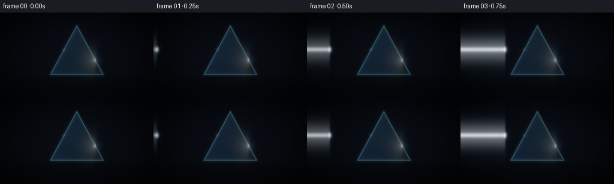
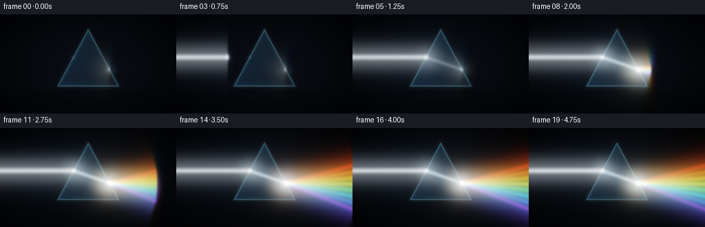
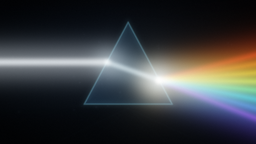
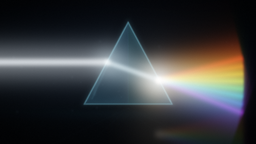

CODING AGENTS AS PIXEL WORLD MODELS
traex/DeepSeek-V4.1-Flash · phygen_086
点击播放 · 原生 RGB 像素
逐轮保存的候选
回放视频、检查图与代码变化。
每份候选均可单独播放。实际图片检查记录在下方工具轨迹中。
候选 01播放与检查图
点击播放 · 原生 RGB 像素


展开代码变化
--- 上一保存版本
+++ 本次保存版本
@@ -0,0 +1,322 @@
+from pathlib import Path
+
+import numpy as np
+from PIL import Image, ImageDraw, ImageFilter
+
+import artifact_io
+
+
+W, H = 256, 144
+FRAMES = 20
+FPS = 4.0
+SS = 3
+SW, SH = W * SS, H * SS
+
+
+def smoothstep(a, b, value):
+ x = np.clip((value - a) / (b - a), 0.0, 1.0)
+ return x * x * (3.0 - 2.0 * x)
+
+
+def blend(base, color, alpha):
+ color = np.asarray(color, dtype=np.float32)
+ return base * (1.0 - alpha[..., None]) + color * alpha[..., None]
+
+
+def add_color(target, color, strength):
+ target += np.asarray(color, dtype=np.float32) * strength[..., None]
+
+
+def segment_distance(xx, yy, p0, p1):
+ x0, y0 = p0
+ x1, y1 = p1
+ vx, vy = x1 - x0, y1 - y0
+ length2 = max(vx * vx + vy * vy, 1e-6)
+ t = np.clip(((xx - x0) * vx + (yy - y0) * vy) / length2, 0.0, 1.0)
+ dx = xx - (x0 + t * vx)
+ dy = yy - (y0 + t * vy)
+ return np.sqrt(dx * dx + dy * dy), t
+
+
+def gaussian_blur(image, radius):
+ channels = []
+ for channel in range(3):
+ plane = np.clip(image[..., channel] * 255.0, 0.0, 255.0).astype(np.uint8)
+ channels.append(
+ np.asarray(
+ Image.fromarray(plane).filter(ImageFilter.GaussianBlur(radius)),
+ dtype=np.float32,
+ )
+ / 255.0
+ )
+ return np.stack(channels, axis=-1)
+
+
+def polygon_mask(points):
+ mask = Image.new("L", (SW, SH), 0)
+ draw = ImageDraw.Draw(mask)
+ draw.polygon([(float(x * SS), float(y * SS)) for x, y in points], fill=255)
+ return np.asarray(mask, dtype=np.float32) / 255.0
+
+
+def draw_ray(emission, xx, yy, p0, p1, color, core, glow, strength, reveal=1.0):
+ dist, along = segment_distance(xx, yy, p0, p1)
+ core_sigma = max(0.55 * SS, 0.1)
+ glow_sigma = max(glow * SS, core_sigma * 1.2)
+ if reveal < 1.0:
+ edge = max(0.018, 1.2 / max(np.hypot(p1[0] - p0[0], p1[1] - p0[1]), 1.0))
+ reveal_mask = 1.0 - smoothstep(reveal - edge, reveal + edge, along)
+ else:
+ reveal_mask = np.ones_like(along)
+ core_line = np.exp(-0.5 * (dist / (core * SS)) ** 2)
+ halo = np.exp(-0.5 * (dist / glow_sigma) ** 2)
+ intensity = reveal_mask * strength * (0.72 * core_line + 0.28 * halo)
+ add_color(emission, color, intensity)
+ return intensity
+
+
+def make_background():
+ y, x = np.mgrid[0:SH, 0:SW].astype(np.float32)
+ xf = x / SS
+ yf = y / SS
+
+ top = np.array([0.006, 0.011, 0.022], dtype=np.float32)
+ bottom = np.array([0.016, 0.025, 0.036], dtype=np.float32)
+ vertical = np.clip(yf / (H - 1), 0.0, 1.0)[..., None]
+ bg = top * (1.0 - vertical) + bottom * vertical
+
+ # A restrained studio glow behind the prism.
+ gx = (xf - 132.0) / 96.0
+ gy = (yf - 68.0) / 67.0
+ glow = np.exp(-0.5 * (gx * gx + gy * gy))
+ bg += np.array([0.016, 0.023, 0.034], dtype=np.float32) * glow[..., None]
+
+ # Dark reflective tabletop, with a faint horizon and edge falloff.
+ floor_y = 107.0
+ floor = smoothstep(floor_y - 1.5, floor_y + 1.5, yf)
+ floor_grad = np.clip((yf - floor_y) / (H - floor_y), 0.0, 1.0)
+ floor_color = np.array([0.009, 0.016, 0.025], dtype=np.float32)
+ bg = bg * (1.0 - floor[..., None] * 0.62) + floor_color * floor[..., None] * 0.62
+ bg += np.array([0.006, 0.010, 0.015], dtype=np.float32) * (
+ floor * np.exp(-floor_grad * 3.0)
+ )[..., None]
+
+ # Very subtle perspective streaks keep the table from reading as a flat band.
+ vanish_x = 128.0
+ for target_x, opacity in [(31.0, 0.030), (77.0, 0.023), (179.0, 0.023), (226.0, 0.030)]:
+ p0 = (vanish_x, floor_y + 1.0)
+ p1 = (target_x, H + 10.0)
+ dist, _ = segment_distance(xf, yf, p0, p1)
+ streak = np.exp(-0.5 * (dist / 0.55) ** 2) * floor * opacity
+ bg += np.array([0.10, 0.15, 0.19], dtype=np.float32) * streak[..., None]
+
+ # Vignette and soft cinematic falloff.
+ nx = (xf - W * 0.5) / (W * 0.56)
+ ny = (yf - H * 0.48) / (H * 0.62)
+ vignette = np.clip(1.0 - 0.55 * (nx * nx + ny * ny), 0.35, 1.0)
+ bg *= vignette[..., None]
+ return bg
+
+
+BG = make_background()
+Y_GRID, X_GRID = np.mgrid[0:SH, 0:SW].astype(np.float32)
+XX, YY = X_GRID / SS, Y_GRID / SS
+
+APEX = (128.0, 22.0)
+LEFT_BASE = (84.0, 104.0)
+RIGHT_BASE = (172.0, 104.0)
+PRISM = [APEX, RIGHT_BASE, LEFT_BASE]
+PRISM_MASK = polygon_mask(PRISM)
+
+ENTRY = (106.5, 62.0)
+EXIT = (159.0, 80.0)
+BEAM_START = (-8.0, 62.0)
+
+SPECTRUM = [
+ ((1.00, 0.08, 0.05), -0.255),
+ ((1.00, 0.28, 0.035), -0.165),
+ ((1.00, 0.64, 0.04), -0.075),
+ ((0.78, 1.00, 0.10), 0.015),
+ ((0.14, 1.00, 0.34), 0.105),
+ ((0.04, 0.74, 1.00), 0.195),
+ ((0.15, 0.30, 1.00), 0.285),
+ ((0.53, 0.12, 1.00), 0.375),
+]
+
+
+def render_prism(frame):
+ glass = np.zeros((SH, SW, 3), dtype=np.float32)
+ yy, xx = YY, XX
+
+ # Faint blue-green volume with a brighter upper facet.
+ height = np.clip((yy - APEX[1]) / (LEFT_BASE[1] - APEX[1]), 0.0, 1.0)
+ left_facet = np.clip((RIGHT_BASE[0] - xx) / (RIGHT_BASE[0] - LEFT_BASE[0]), 0.0, 1.0)
+ glass += np.array([0.055, 0.115, 0.145], dtype=np.float32) * (0.32 + 0.35 * (1.0 - height))[..., None]
+ glass += np.array([0.018, 0.042, 0.082], dtype=np.float32) * left_facet[..., None]
+
+ # Internal reflection bands and a cool base glow.
+ bands = 0.5 + 0.5 * np.sin((xx * 0.24 + yy * 0.42) + frame * 0.08)
+ glass += np.array([0.012, 0.028, 0.035], dtype=np.float32) * (bands * 0.10)[..., None]
+ glass += np.array([0.018, 0.055, 0.075], dtype=np.float32) * (
+ np.exp(-0.5 * ((yy - 101.0) / 4.5) ** 2) * 0.24
+ )[..., None]
+ glass *= PRISM_MASK[..., None]
+
+ # Glass edge line and soft halo.
+ edges = []
+ for p0, p1 in [(APEX, LEFT_BASE), (LEFT_BASE, RIGHT_BASE), (RIGHT_BASE, APEX)]:
+ dist, _ = segment_distance(xx, yy, p0, p1)
+ edges.append(dist)
+ edge_dist = np.minimum.reduce(edges)
+ edge_core = np.exp(-0.5 * (edge_dist / 0.58) ** 2)
+ edge_halo = np.exp(-0.5 * (edge_dist / 2.4) ** 2)
+ edge_color = np.array([0.37, 0.68, 0.77], dtype=np.float32)
+ glass += edge_color * (0.34 * edge_core + 0.065 * edge_halo)[..., None]
+
+ # Tiny highlights at the two beam interaction points.
+ for point, radius, strength in [(ENTRY, 2.0, 0.12), (EXIT, 1.7, 0.08)]:
+ d = np.hypot(xx - point[0], yy - point[1])
+ glass += np.array([0.50, 0.76, 0.85], dtype=np.float32) * (
+ strength * np.exp(-0.5 * (d / radius) ** 2)
+ )[..., None]
+ return glass
+
+
+def render_frame(index):
+ t = float(index)
+ beam_travel = smoothstep(0.0, 4.6, t)
+ beam_level = 0.18 + 0.82 * smoothstep(0.2, 3.2, t)
+ internal_level = 0.95 * smoothstep(3.8, 6.7, t)
+ spectrum_progress = smoothstep(5.7, 14.3, t)
+ spectrum_level = 0.25 + 0.75 * smoothstep(5.2, 9.5, t)
+ shimmer = 0.96 + 0.04 * np.sin(t * 0.72 + 0.8)
+
+ scene = BG.copy()
+ emission = np.zeros((SH, SW, 3), dtype=np.float32)
+ scene += render_prism(index) * 0.86
+
+ # Incoming warm-white beam. The moving reveal leaves a faint path behind it.
+ reveal = beam_travel
+ beam_strength = beam_level * shimmer
+ white = (0.94, 0.97, 1.0)
+ draw_ray(
+ emission,
+ XX,
+ YY,
+ BEAM_START,
+ ENTRY,
+ white,
+ core=0.82,
+ glow=4.4,
+ strength=0.92 * beam_strength,
+ reveal=reveal,
+ )
+ draw_ray(
+ emission,
+ XX,
+ YY,
+ BEAM_START,
+ ENTRY,
+ (0.42, 0.70, 1.0),
+ core=0.35,
+ glow=9.0,
+ strength=0.12 * beam_strength,
+ reveal=reveal,
+ )
+
+ # A compact leading pulse makes the first two seconds feel physically active.
+ front_x = BEAM_START[0] + (ENTRY[0] - BEAM_START[0]) * beam_travel
+ front = np.exp(-0.5 * ((XX - front_x) / 1.8) ** 2) * np.exp(
+ -0.5 * ((YY - 62.0) / 2.8) ** 2
+ )
+ front *= (1.0 - smoothstep(4.4, 5.2, t)) * 0.62
+ add_color(emission, (0.74, 0.88, 1.0), front)
+
+ # The beam bends inside the glass, then divides at the exit face.
+ draw_ray(
+ emission,
+ XX,
+ YY,
+ ENTRY,
+ EXIT,
+ (0.78, 0.93, 1.0),
+ core=0.62,
+ glow=3.2,
+ strength=0.72 * internal_level,
+ reveal=1.0,
+ )
+
+ # Broad white shoulder near the exit blends the individual rays into light.
+ exit_d = np.hypot(XX - EXIT[0], YY - EXIT[1])
+ exit_glow = np.exp(-0.5 * (exit_d / 5.8) ** 2) * spectrum_level
+ add_color(emission, (0.42, 0.57, 0.70), exit_glow * 0.42)
+
+ for ray_index, (color, angle) in enumerate(SPECTRUM):
+ end = (261.0, EXIT[1] + np.tan(angle) * (261.0 - EXIT[0]))
+ phase = 0.94 + 0.06 * np.sin(t * 0.58 + ray_index * 0.77)
+ draw_ray(
+ emission,
+ XX,
+ YY,
+ EXIT,
+ end,
+ color,
+ core=0.78,
+ glow=4.7,
+ strength=0.55 * spectrum_level * phase,
+ reveal=spectrum_progress,
+ )
+ # A wider, weaker copy gives the spectrum colored atmosphere.
+ draw_ray(
+ emission,
+ XX,
+ YY,
+ EXIT,
+ end,
+ color,
+ core=0.20,
+ glow=10.0,
+ strength=0.052 * spectrum_level * phase,
+ reveal=spectrum_progress,
+ )
+
+ # Fine floating motes, visible mainly where they cross the beams.
+ rng = np.random.default_rng(8617)
+ for i in range(28):
+ base_x = rng.uniform(8.0, 245.0)
+ base_y = rng.uniform(28.0, 112.0)
+ drift_x = 1.8 * np.sin(t * 0.13 + i * 2.1)
+ drift_y = 0.7 * np.cos(t * 0.17 + i * 0.9)
+ radius = rng.uniform(0.45, 1.05)
+ twinkle = 0.5 + 0.5 * np.sin(t * 0.65 + i * 1.7)
+ d2 = (XX - (base_x + drift_x)) ** 2 + (YY - (base_y + drift_y)) ** 2
+ mote = np.exp(-0.5 * d2 / radius**2) * (0.010 + 0.013 * twinkle)
+ add_color(emission, (0.58, 0.73, 0.88), mote)
+
+ # Bloom and a gentle highlight shoulder.
+ bloom_small = gaussian_blur(emission, 1.6 * SS)
+ bloom_large = gaussian_blur(emission, 5.5 * SS)
+ light = emission + 0.34 * bloom_small + 0.20 * bloom_large
+ linear = scene + light
+ mapped = 1.0 - np.exp(-linear * 1.28)
+ mapped = np.clip(mapped, 0.0, 1.0)
+
+ # Fine deterministic grain prevents the dark studio from looking plastic.
+ grain_rng = np.random.default_rng(4200 + index)
+ grain = grain_rng.normal(0.0, 0.0045, (SH, SW, 1)).astype(np.float32)
+ mapped = np.clip(mapped + grain, 0.0, 1.0)
+
+ image = Image.fromarray((mapped * 255.0 + 0.5).astype(np.uint8), "RGB")
+ image = image.resize((W, H), Image.Resampling.LANCZOS)
+ return np.asarray(image, dtype=np.uint8)
+
+
+def main():
+ frames = np.stack([render_frame(i) for i in range(FRAMES)], axis=0)
+ case_dir = Path(__file__).resolve().parent
+ artifact_io.save(frames, case_dir)
+ print(f"saved {len(frames)} frames to {case_dir}")
+
+
+if __name__ == "__main__":
+ main()
候选 02播放与检查图
点击播放 · 原生 RGB 像素

展开代码变化
--- 上一保存版本
+++ 本次保存版本
@@ -127,6 +127,8 @@
RIGHT_BASE = (172.0, 104.0)
PRISM = [APEX, RIGHT_BASE, LEFT_BASE]
PRISM_MASK = polygon_mask(PRISM)
+LEFT_FACE_MASK = polygon_mask([APEX, (128.0, 104.0), LEFT_BASE])
+RIGHT_FACE_MASK = polygon_mask([APEX, RIGHT_BASE, (128.0, 104.0)])
ENTRY = (106.5, 62.0)
EXIT = (159.0, 80.0)
@@ -148,17 +150,32 @@
glass = np.zeros((SH, SW, 3), dtype=np.float32)
yy, xx = YY, XX
- # Faint blue-green volume with a brighter upper facet.
+ # A cool glass volume, split into two subtly different refracting facets.
height = np.clip((yy - APEX[1]) / (LEFT_BASE[1] - APEX[1]), 0.0, 1.0)
- left_facet = np.clip((RIGHT_BASE[0] - xx) / (RIGHT_BASE[0] - LEFT_BASE[0]), 0.0, 1.0)
- glass += np.array([0.055, 0.115, 0.145], dtype=np.float32) * (0.32 + 0.35 * (1.0 - height))[..., None]
- glass += np.array([0.018, 0.042, 0.082], dtype=np.float32) * left_facet[..., None]
+ center_falloff = np.exp(-0.5 * ((xx - 128.0) / 31.0) ** 2)
+ glass += np.array([0.061, 0.125, 0.151], dtype=np.float32) * (
+ 0.58 + 0.30 * (1.0 - height)
+ )[..., None]
+ glass += np.array([0.024, 0.059, 0.091], dtype=np.float32) * (
+ LEFT_FACE_MASK * (0.62 + 0.24 * (1.0 - height))
+ )[..., None]
+ glass += np.array([0.015, 0.070, 0.075], dtype=np.float32) * (
+ RIGHT_FACE_MASK * 0.64
+ )[..., None]
+ glass += np.array([0.038, 0.078, 0.105], dtype=np.float32) * (
+ 0.24 * center_falloff * (1.0 - 0.45 * height)
+ )[..., None]
# Internal reflection bands and a cool base glow.
bands = 0.5 + 0.5 * np.sin((xx * 0.24 + yy * 0.42) + frame * 0.08)
- glass += np.array([0.012, 0.028, 0.035], dtype=np.float32) * (bands * 0.10)[..., None]
+ glass += np.array([0.015, 0.036, 0.045], dtype=np.float32) * (bands * 0.13)[..., None]
glass += np.array([0.018, 0.055, 0.075], dtype=np.float32) * (
- np.exp(-0.5 * ((yy - 101.0) / 4.5) ** 2) * 0.24
+ np.exp(-0.5 * ((yy - 101.0) / 4.5) ** 2) * 0.33
+ )[..., None]
+ # A narrow internal caustic catches the light near the left face.
+ caustic_d, _ = segment_distance(xx, yy, (105.0, 37.0), (94.0, 94.0))
+ glass += np.array([0.16, 0.29, 0.34], dtype=np.float32) * (
+ 0.15 * np.exp(-0.5 * (caustic_d / 1.15) ** 2)
)[..., None]
glass *= PRISM_MASK[..., None]
@@ -171,7 +188,13 @@
edge_core = np.exp(-0.5 * (edge_dist / 0.58) ** 2)
edge_halo = np.exp(-0.5 * (edge_dist / 2.4) ** 2)
edge_color = np.array([0.37, 0.68, 0.77], dtype=np.float32)
- glass += edge_color * (0.34 * edge_core + 0.065 * edge_halo)[..., None]
+ glass += edge_color * (0.43 * edge_core + 0.080 * edge_halo)[..., None]
+
+ # A fine specular seam down the left face sells the glass thickness.
+ seam_d, _ = segment_distance(xx, yy, (124.2, 28.0), (92.0, 98.5))
+ glass += np.array([0.20, 0.39, 0.45], dtype=np.float32) * (
+ 0.13 * np.exp(-0.5 * (seam_d / 0.68) ** 2)
+ )[..., None]
# Tiny highlights at the two beam interaction points.
for point, radius, strength in [(ENTRY, 2.0, 0.12), (EXIT, 1.7, 0.08)]:
@@ -194,6 +217,24 @@
scene = BG.copy()
emission = np.zeros((SH, SW, 3), dtype=np.float32)
scene += render_prism(index) * 0.86
+
+ # Contact shadow and a cool table wash anchor the prism to the surface.
+ contact = np.exp(
+ -0.5
+ * (
+ ((XX - 128.0) / 45.0) ** 2
+ + ((YY - 107.0) / 2.9) ** 2
+ )
+ )
+ scene *= 1.0 - 0.38 * contact[..., None]
+ table_glow = np.exp(
+ -0.5
+ * (
+ ((XX - 128.0) / 56.0) ** 2
+ + ((YY - 113.0) / 5.0) ** 2
+ )
+ )
+ scene += np.array([0.006, 0.019, 0.024], dtype=np.float32) * table_glow[..., None]
# Incoming warm-white beam. The moving reveal leaves a faint path behind it.
reveal = beam_travel
@@ -280,6 +321,29 @@
reveal=spectrum_progress,
)
+ # The tabletop catches a subdued, blurred echo of the outgoing spectrum.
+ reflection = np.zeros((SH, SW, 3), dtype=np.float32)
+ reflected_exit = (EXIT[0], 2.0 * 107.0 - EXIT[1])
+ for ray_index, (color, angle) in enumerate(SPECTRUM):
+ reflected_end = (
+ 261.0,
+ reflected_exit[1] + np.tan(angle) * (261.0 - EXIT[0]),
+ )
+ draw_ray(
+ reflection,
+ XX,
+ YY,
+ reflected_exit,
+ reflected_end,
+ color,
+ core=1.0,
+ glow=7.0,
+ strength=0.060 * spectrum_level,
+ reveal=spectrum_progress,
+ )
+ reflection = gaussian_blur(reflection, 1.7 * SS)
+ scene += reflection * 0.68
+
# Fine floating motes, visible mainly where they cross the beams.
rng = np.random.default_rng(8617)
for i in range(28):
候选 03播放与检查图

候选 04播放与检查图
点击播放 · 原生 RGB 像素

展开代码变化
--- 上一保存版本
+++ 本次保存版本
@@ -370,7 +370,7 @@
grain = grain_rng.normal(0.0, 0.0045, (SH, SW, 1)).astype(np.float32)
mapped = np.clip(mapped + grain, 0.0, 1.0)
- image = Image.fromarray((mapped * 255.0 + 0.5).astype(np.uint8), "RGB")
+ image = Image.fromarray((mapped * 255.0 + 0.5).astype(np.uint8))
image = image.resize((W, H), Image.Resampling.LANCZOS)
return np.asarray(image, dtype=np.uint8)
可观测工具轨迹
实际执行的命令与返回图片。
命令 1exit 0
/bin/bash -c "pwd && rg --files -g 'prompt.txt' -g 'GENERATION_RULES.md' -g 'task_spec.json' -g '"'!node_modules'"'"
命令 2exit 0
/bin/bash -c 'ls -la'
命令 3exit 0
/bin/bash -c 'cat prompt.txt'
命令 4exit 0
/bin/bash -c 'cat GENERATION_RULES.md'
命令 5exit 0
/bin/bash -c 'cat task_spec.json'
命令 6exit 0
/bin/bash -c "sed -n '1,240p' artifact_io.py"
命令 7exit 0
/bin/bash -c "sed -n '1,260p' player_template.html"
命令 8exit 0
/bin/bash -c "python - <<'PY'
import numpy, PIL
print('numpy', numpy.__version__)
print('PIL', PIL.__version__)
PY"命令 9exit 0
/bin/bash -c 'git status --short'
命令 10exit 0
/bin/bash -c 'python generate.py'
命令 11exit 0
/bin/bash -c 'python generate.py'
命令 12exit 0
/bin/bash -c "python - <<'PY'
from pathlib import Path
import numpy as np
from PIL import Image
files=sorted(Path('frames').glob('*.png'))
a=np.stack([np.asarray(Image.open(p), dtype=np.float32) for p in files])
print('shape', a.shape, 'dtype', a.dtype)
print('value range', a.min(), a.max())
print('mean brightness by frame', [round(float(x.mean()),2) for x in a])
print('frame-to-frame mean abs diff', [round(float(np.abs(a[i]-a[i-1]).mean()),3) for i in range(1,len(a))])
PY"命令 13exit 0
/bin/bash -c 'python generate.py'
命令 14exit 0
/bin/bash -c "python - <<'PY'
from pathlib import Path
import json, numpy as np
from PIL import Image
spec=json.loads(Path('task_spec.json').read_text())
files=sorted(Path('frames').glob('*.png'))
assert len(files)==spec['frames'], (len(files), spec['frames'])
for i,p in enumerate(files):
im=Image.open(p)
assert im.size==(spec['width'],spec['height']), (p, im.size)
assert im.mode=='RGB', (p, im.mode)
z=np.load('pixels.npz')['pixels']
assert z.shape==(spec['height'],spec['width'],spec['frames']), z.shape
html=Path('index.html').read_text()
assert '__DATA__' not in html and 'window.__pixelReady' in html
print('validated:', len(files), 'RGB frames,', Image.open(files[0]).size, 'at', spec['fps'], 'fps')
print('artifacts:', ', '.join(sorted(p.name for p in Path('.').glob('*') if p.is_file() and p.suffix in {'.py','.npz','.html','.png','.txt','.json'})))
PY"命令 15exit 0
/bin/bash -c 'ls -lh index.html pixels.npz inspection.png frames/00.png frames/19.png && python -m py_compile generate.py'
命令 16exit 0
/bin/bash -c 'git status --short -- generate.py frames pixels.npz index.html inspection.png transition_check.png'
命令 17exit 0
/bin/bash -c 'git check-ignore -v generate.py frames/00.png pixels.npz index.html inspection.png || true'
视觉工具实际返回图片 1

视觉工具实际返回图片 2

视觉工具实际返回图片 3

视觉工具实际返回图片 4
视觉工具实际返回图片 5

保存候选 4 份；完成命令 17 次；可验证图片返回 5 张。原始 API 响应与完整日志保留在本地。